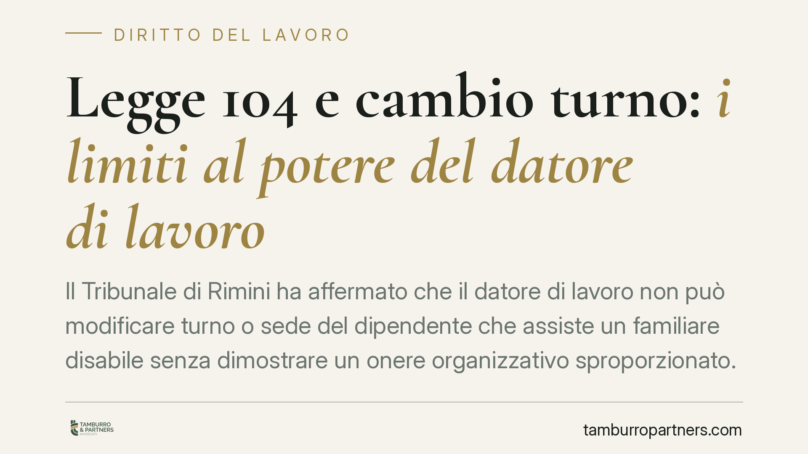

Legge 104 e cambio turno: i limiti al potere del datore di lavoro
Il Tribunale di Rimini ha affermato che il datore di lavoro non può modificare turno o sede del dipendente che assiste un familiare disabile senza dimostrare un onere organizzativo sproporzionato. In mancanza, la scelta configura discriminazione indiretta per associazione. Una pronuncia che amplia la tutela anche a chi, pur non disabile, presta assistenza con i permessi della Legge 104.

Il caso
Una lavoratrice di una catena di supermercati, titolare dei permessi previsti dalla Legge 104/1990 per assistere un familiare disabile, si è vista modificare l'orario e la collocazione in azienda. Il mutamento rendeva incompatibile l'attività lavorativa con l'assistenza prestata al congiunto.
Il Tribunale di Rimini, Sezione Lavoro, ha ritenuto illegittima la condotta datoriale. Il punto centrale: l'azienda non aveva dimostrato che mantenere il turno originario comportasse un onere organizzativo sproporzionato. In assenza di questa prova, la modifica unilaterale integra una discriminazione indiretta per associazione.
Inquadramento normativo
La Legge 104/1990 riconosce al lavoratore che assiste un familiare con grave disabilità una serie di tutele, tra cui i permessi mensili retribuiti (art. 33) e, in determinati casi, il diritto a non essere trasferito senza consenso.
La nozione di "discriminazione per associazione" non è scritta in modo esplicito nel nostro codice, ma deriva dalla giurisprudenza della Corte di Giustizia UE (caso Coleman, C-303/06) e dalla Direttiva 2000/78/CE. In sintesi: è vietato trattare sfavorevolmente un lavoratore non perché sia lui stesso disabile, ma perché legato a una persona disabile di cui si prende cura.
La "discriminazione indiretta" ricorre quando una disposizione apparentemente neutra — qui un semplice cambio turno — mette di fatto in condizione di svantaggio chi appartiene a una categoria protetta. L'art. 2 del d.lgs. 216/2003 recepisce questi principi nell'ordinamento interno.
Le implicazioni pratiche
La decisione sposta l'attenzione su chi deve provare cosa. Non è il caregiver a dover giustificare la richiesta di mantenere il turno: è il datore di lavoro a dover dimostrare che l'accomodamento richiesto sarebbe eccessivamente gravoso sul piano organizzativo ed economico.
Si tratta del principio dell'"accomodamento ragionevole": l'azienda è tenuta ad adottare le misure necessarie per non penalizzare il lavoratore che assiste un disabile, salvo che ciò comporti un sacrificio sproporzionato. La valutazione è concreta e va calibrata sulle dimensioni e sull'organizzazione dell'impresa.
Per il lavoratore, questo significa che un cambio turno o di sede non è di per sé vietato, ma deve reggere a un vaglio di proporzionalità. Per il datore, significa che le decisioni organizzative incidenti su un caregiver vanno documentate e motivate.
Attenzione, però: la pronuncia è di merito e riferita a un caso specifico. Non crea un automatismo e non sostituisce la valutazione delle singole circostanze. Un diverso assetto di fatto può condurre a esiti differenti.
Cosa fare in concreto
- Conserva la documentazione. Raccogli il verbale di riconoscimento della Legge 104, le comunicazioni aziendali sul cambio turno e ogni prova dell'attività di assistenza prestata.
- Formalizza l'esigenza. Comunica per iscritto al datore di lavoro, con mezzo tracciabile, l'incompatibilità del nuovo orario con l'assistenza al familiare, chiedendo le ragioni organizzative della modifica.
- Verifica il contratto collettivo. Molti CCNL contengono clausole specifiche su turni, trasferimenti e tutele per i caregiver: controllale prima di qualsiasi iniziativa.
- Non abbandonare il posto. Un rifiuto unilaterale di eseguire la prestazione può esporre a provvedimenti disciplinari. Contesta la legittimità del provvedimento nelle sedi corrette.
- Richiedi una valutazione preventiva. Prima di agire in giudizio, consigliamo di far esaminare la posizione da un professionista, per valutare se sussistano i presupposti della discriminazione indiretta.
---
*Contributo informativo a cura di Tamburro & Partners - Avv. Giuseppe Tamburro. Non costituisce parere legale.*
Ogni storia di lavoro ha i suoi tempi.
Se gestisci HR e vuoi un confronto su contenzioso, ispezioni o licenziamenti, scrivi allo studio. Ti rispondiamo entro un giorno lavorativo.